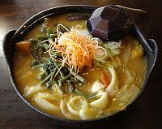
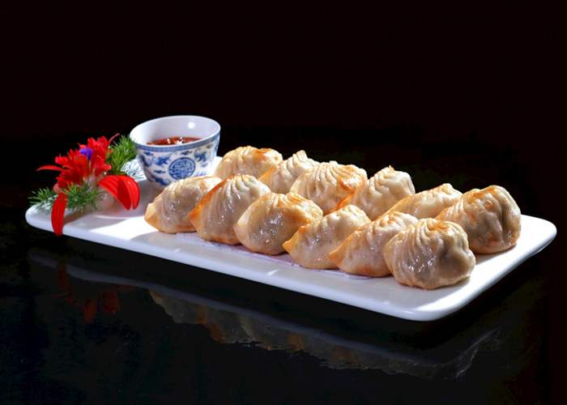
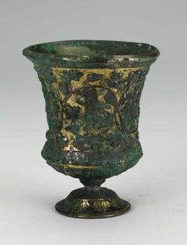
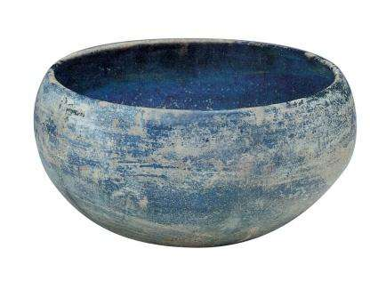

拓跋鲜卑的第一次南迁，是由于部落不断发展壮大，洞穴式的居住生活方式逐渐满足不了当时人们的需求而成行的。1980年，内蒙古呼伦贝尔盟文物工作站的考古工作者米文平等人在大兴安岭北段考察时，在洞口内西壁处发现了北魏太武帝太平真君四年的石刻祝文，祝文中记载：“历载亿年，聿来南迁”，大意为一部分鲜卑拓跋人在首领推寅（史称“第一推寅”）的带领下，由大兴安岭北段向西南方向移动。他们迁居到今内蒙古自治区的呼伦贝尔大草原，并在这里生活了大约100年左右，这次大迁移使得拓跋鲜卑人从森林走向了广袤的草原。在拓跋鲜卑南迁过程中，地理环境的改变也让草原游牧经济逐渐形成，以骑射、畜牧、射猎为主，饮食习惯在这个过程中也有了一些变化，食肉饮酪成为了当时饮食的“代名词”。
因阴山以南地区与汉族比邻，拓跋鲜卑在南迁过程中与汉人不断接触，也渐渐发现逐水草而居的游牧生活，也会有水草不足的困窘，鲜卑民族理应十分羡慕汉人的生活。公元398年，北魏王朝将都城迁到了平城。此时的平城，既有游牧草原文明又有农耕文明，是典型的半农半牧地区。从历史层面理解，北魏的民族融合就是一种强制性的地域融合、政治融合。从生活层面理解，不同民族的饮食习惯不能短时间改变，所以定都平城后，大家都沿袭各自的饮食习惯，各食其食。肉食和奶制品仍是游牧民族所食用，五谷蔬菜为汉族食用。汉人的饮食方式，曾经都是以蒸、煮、烩、炒为主，少数民族多以烧、烤、涮为主。随着时间推移，这样的饮食文化揉和、共生、发展，进而形成了有地域特色的鲜鱼茗汁、牛羊酪浆、五谷蔬菜共上案几的平城特色饮食风俗。
 
大量的考古资料表明，北魏平城时期墓室墓葬中，殉葬牲畜种类有牛、马、羊和野猪等，还有农耕文化使用的仓、石磨盘、萁、铁镢头、铁斧等，而且有的墓葬殉葬牲畜的数量很大，说明牲畜在当时不仅被饲养，而且数量庞大。北魏墓葬中也出土过大量野猪、鸡、羊、狗等类型的陶俑，也反应出当时饮食的来源和特点。大同市博物馆魏都平城二展厅内展出的碳化粮食，和北魏墓葬中出土的釉陶灶、井、踏碓，也直观地为我们提供了平城时期食物和饮食方式等诸多内容。
繁荣的平城时期，随着太武帝拓跋焘灭北凉国，打通了西域的交通，大量的使者、商人涌入平城，加速了物质和文化的交流。异域风情的土特产品、工艺技术与音乐、舞蹈、美术等元素通过丝绸之路融入到平城生活，大量墓葬出土的文物都带有葡萄纹样装饰。大同市博物馆馆藏的葡萄童子纹鎏金高足铜杯，腹壁满饰葡萄藤蔓，并浮雕攀枝收获葡萄的裸身童子，表现了欢快的丰收场面。北魏时期植物标本扁桃等外来的食物也逐渐融入鲜卑生活之中，这都从另一个侧面体现出当时的饮食构成颇有中西亚地区的特色。
 
自古以来，饮食文化就是各民族生存之本。在北魏民族融合的道路上，政策先行，饮食固本，鲜卑和北方的其他少数民族最终都融入了汉族之中，成为华夏文明不可分割的重要组成部分。这样的民族融合波澜壮阔，南北文化相互碰撞，中西方文化兼容并蓄，在我国北方形成了一个强大的体系，为今后盛唐文明的形成与发展奠定了良好基础。